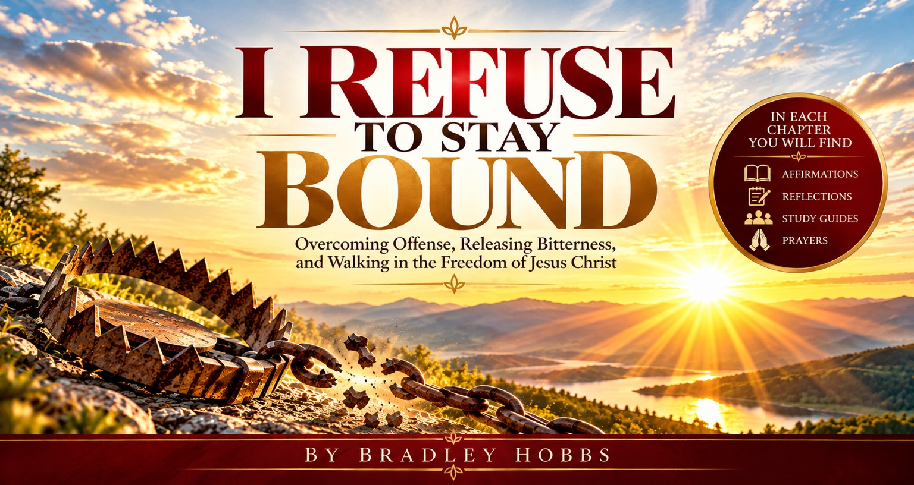

A journey toward spiritual freedom
I REFUSE TO STAY BOUND
Overcoming Offense, Releasing Bitterness, and Walking in the Freedom of Jesus Christ.

The heart behind the message
Freedom is possible. And the journey can begin today.
Offense can take root quietly, bitterness can grow over time, and painful experiences can shape the way we see ourselves and others. I Refuse to Stay Bound invites readers to bring those places before Jesus Christ, examine what has taken hold, and pursue a life marked by forgiveness, wisdom, truth, and spiritual freedom.
Discover the messageResources for the journey
Go deeper than the page.
Affirmations
Scripture-centered truths to revisit as you renew your mind and focus on Christ.
Reflections
Guided questions that help connect the message with everyday life.
Study Guides
Explore chapter themes for personal study, small groups, or church discussion.
Prayer
Make room for honest prayer, spiritual growth, and a renewed walk with Jesus.
“Freedom begins when we stop allowing yesterday’s wounds to govern today’s walk with Christ.”
Walk forward in truth, forgiveness, and faith.
Take the next step
Let the journey toward freedom begin.
Learn about the book and return for new chapter resources as they become available.